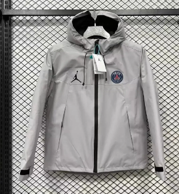
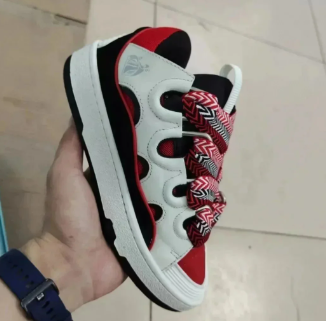
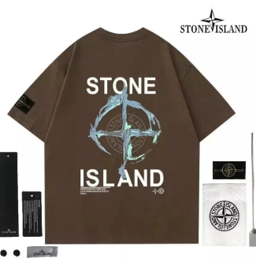
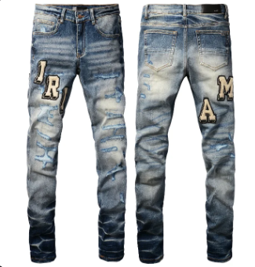
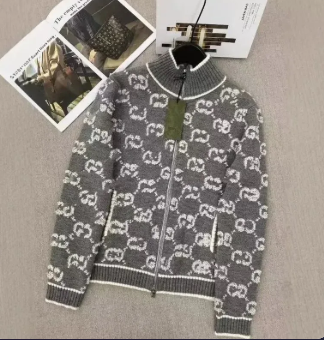
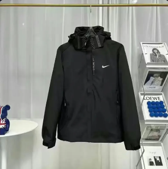
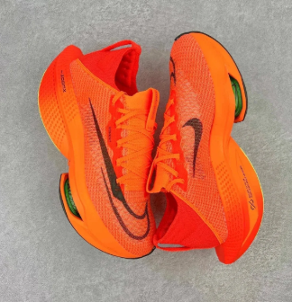

sugargoo StreetStyle
sugargoo Spreadsheet
Your StreetStyle Finds Hub
Discover curated streetwear find examples with QC notes, fit guidance, category filters, and links into the StreetStyle catalog.
Spreadsheet-style discovery
sugargoo StreetStyle find examples
Search and filter outfit-ready examples before opening the StreetStyle catalog. Each card includes the context a shopper needs before clicking through.

Washed Work Jacket
Look for clean seam alignment, even wash tone, and enough shoulder room for hoodie layering.
View Outerwear

Retro Low-Top Sneaker
Check toe shape, midsole color, heel tab symmetry, and outsole photos before adding to rotation.
View Sneakers

Heavyweight Graphic Tee
Prioritize heavier cotton, straight side seams, and print placement that sits centered on the chest.
View Tops
Nylon Crossbody Bag
Ask for zipper close-ups, strap hardware, interior lining, and scale photos with common items.
View Accessories

Wide-Leg Denim
Confirm waist, rise, thigh, and inseam measurements. Wash color can shift under different lighting.
View Bottoms

Zip Knit Layer
Review collar shape, zipper smoothness, sleeve length, and whether the knit holds its structure.
View Tops

Technical Shell Jacket
Check hood depth, drawcords, taped seams, pocket layout, and water-resistant fabric claims.
View Outerwear
Minimal Cap
Look at crown height, brim curve, embroidery density, and rear clasp quality in close-up photos.
View Accessories

Chunky Runner
Compare side profile, tongue padding, lace shape, and sole height. Check measurements if between sizes.
View Sneakers
Why choose this spreadsheet
Built for shoppers who search Sugargoo spreadsheet style finds
Many buyers search for a Sugargoo spreadsheet because they want fast streetwear discovery, QC context, and quick category links. This sugargoo spreadsheet keeps that familiar browsing flow, but focuses the content around StreetStyle pieces and clearer buying notes.
Streetwear finds without the spreadsheet clutter
The page keeps the quick-scan feel people expect from a Sugargoo finds spreadsheet, but each example has cleaner context: category, fit note, QC reminder, and a quick path into the matching StreetStyle section.
QC notes before the click
Instead of sending users away with only a product name, the cards explain what to inspect: shape, stitching, fabric weight, color, hardware, and sizing risk. That gives Google users a reason to stay, read, and compare.
Category links that match shopping intent
Outerwear, sneakers, tops, bottoms, and accessories all point to the matching StreetStyle category. A user searching for a Sugargoo spreadsheet alternative can land here and move straight into the relevant StreetStyle section.
FAQ
sugargoo and Sugargoo spreadsheet questions
Short answers for people comparing spreadsheet-style streetwear lists, QC photo guides, and W2C pages before choosing where to browse.
Is this a Sugargoo spreadsheet?
This is not an official Sugargoo page. It is a sugargoo StreetStyle spreadsheet-style finds hub for shoppers who like the Sugargoo spreadsheet format: quick categories, product notes, QC reminders, and category links.
Why would someone use this instead of a generic Sugargoo finds list?
Generic lists often give you only a title and a link. This page is written around buying decisions: how the piece fits, what detail photos matter, what category it belongs in, and whether it works in a real streetwear outfit.
Where do the product cards send me?
Each card opens the matching StreetStyle category, such as outerwear, sneakers, tops, bottoms, or accessories. The goal is to help you shortlist faster, then continue browsing the live catalog.
Does this page include QC photos?
The homepage gives QC checkpoints, not its own warehouse photo gallery. When product pages include more images or detail views, use these notes to inspect shape, stitching, materials, color accuracy, hardware, and sizing before buying.
What keywords is this page built to answer?
It is written for searches like Sugargoo spreadsheet, Sugargoo finds, streetwear spreadsheet, QC notes, W2C research, and sugargoo StreetStyle finds, while keeping the actual content focused on sugargoo shoppers.